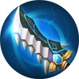
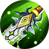
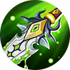

|
Грейнджер
|
|
|
Грейнджер - герой класса стрелок. Его особенностю является огромный урон в начале игры.
|
|
"Твоя смерть - музыка для моих ушей!"
-Грейнджер |
 |
Дата выхода: - 20 апреля 2019 года |
|
| История героя: | |
| На всей территории земель Рассвета ходило немало историй об одном музыканте. Никто не знал, о том от куда он явился и куда направляется. Грейнджер осиротел во время войны между Монийской империей и Южными горами. После того как он был найден солдатами, его отправили на обучение в Монастырь света. Все время он был очень отстранен и не проявлял никакого интереса ко всему происходящему. Но стоило в глубинах монастыря раздаться звукам скрипки, как его глаза мгновенно оживали. Поскольку у учеников монастыря было только два пути, либо поступить на службу, убивать демонов, или остаться в монастыре и работать там. Все думали что музыкант выберет второй путь, но их удивлению не было предела, когда Грейнджер выбрал оружие, вместо спокойной жизни. Наслаждаясь звуками скрипки, которые он превратил в прелюдие битвы. Его стиль боя и эффективность восхитила даже самого известного охотника на демонов — Алукарда. Вскоре новости о Грейнджере распространились и среди демонов, и стоило им услышать грустную мелодию скрипки, как они спешили убежать, опасаясь смерти. | |
Слабые и сильные стороны: Слабые:
Cильные:
Сборка героя:

 

Эмблемы
Выбор линии:
Так, как Грейнджер - стрелок, в начале игры он отправляется за красным баффом
Пассивное: Каприз
Грейнджер может зарядить свой пистолет 6 пулями одновременно. Каждая 6 пуля наносит критический урон. Базовая атака Грейнджера наносит больше урона, также он получает на 50% меньше скорости атаки от снаряжения или эмблем.

1 Навык: Рапсодия
Грейнджер заряжает все пули в свой пистолет и стреляет вперед. Каждая пуля наносит врагам 30 (+80% общая физическая атака) единиц физического урона.

2 Навык: Рондо
Грейнджер быстро перемещается в указанном направлении. Его следующие 2 базовые атаки наносят 10% дополнительного урона в течение 5 секунд. Каждый раз, когда Рапсодия попадает по врагу, перезарядка этого навыка уменьшается на 0.5 секунд.

Ультимативная способность: Смертельная Соната
Грейнджер превращает свою скрипку в супер-пушку и полностью заряжает ее пулями. Потом он стреляет 2 супер-пулями одновременно вперед. Супер-пуля игнорирует миньонов на пути и поражает только вражеских героев. Супер-пули взорвутся при попадании в первого вражеского героя, нанося 150 (+100% общая физическая атака) единиц физического урона врагам поблизости и замедляя их на 80%. Каждый раз, когда Грейнджер стреляет супер-пулей, он может двинуться в другом направлении. Когда Смертельная соната заканчивается, перезарядка этой способности сократится на 5 секунд.

|